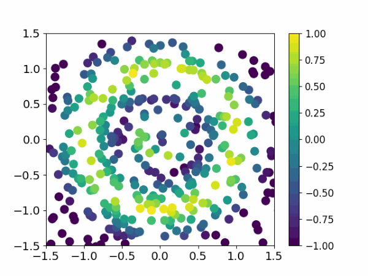

How to correctly use diffusion model in RL?
Diffusion model is well-known to its strong expressivity of fitting multi-modal distributions, which makes it useful for the offline setting.
Ideally, given the same value function trained by offline RL algorithms, we expect diffusion model to fit in more optimal modes in the offline dataset than using vanilla MLPs.
However, how to correctly do that remains unsolved, we show previous methods' limitations and propose a new paradigm: guide-then-select, to effectively fit in the optimal mode in the dataset.
Methodology: the guide-then-select framework
We choose an in-sample learning algorithm, DICE (see this and this for an introduction of DICE methods) to learn the value functions. Instead of using weighted behavior cloning, we aim to use diffusion model to better extract the policy.
Guide step: we first show that DICE-based methods can be viewed as a transformation from the behavior distribution to the optimal policy distribution. More specifically, the score function of the optimal policy and the behavior policy satisfy the following relationship.
The second term is intractable due to the conditional expectation, we propose an in-sample method to accurately estimate it, avoiding the evaluation of OOD actions.
Select step: due to the multi-modality contained in the optimal policy distribution, the guide-step may guide towards those local-optimal modes. We thus generate a few candidate actions and use the Q function to select one with the highest value to achieve global-optimum.
Sanity check
Toycase of a 2-D bandit problem. The action in the offline dataset follows a bivariate standard normal distribution constrained within an annular region. The ground truth reward has two peaks extending from the center outward.
We use a diffusion model to fit the behavior policy and a reward model to fit the ground truth reward R. Both models fit in-distribution data well while making error in out-of-distribution regions.

From left to right: IDQL (select-only), QGPO (guide-only) and Diffusion-DICE (guide-then-select). Comparing to other guide-only or select-only methods, only Diffusion-DICE could generate correct optimal actions in the outer circle. Other methods tend to expolit error information from the reward model and only generate overestimated, sub-optimal actions.
Empirical results
SOTA results on D4RL benchmarks (~60 on halfcheetah-m, ~100 on hopper-m, ~90 on walker2s-m, ~90 on antmaze-m-p, ~70 on antmaze-l-p and antmaze-l-d)